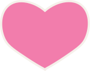

Hobby Title
You are at the end of the list. Select a new category, or try a hobby from your "liked" list.

Crocheting
Inital Cost: $30
Crochet is a hobby where yarn is looped using a hook to create fabric such as scarves, hats, or blankets. It is relaxing and allows people to create handmade items using different colors and patterns.
Items needed for hobby:
- Yarn
- Crochet Hook
- Pattern or Design Idea


Puzzles
Inital Cost: $30
Puzzles are a hobby where you connect small pieces to complete a picture or solve a challenge. It helps improve problem-solving skills, focus, and patience.
Items needed for hobby:
- Puzzles
- Flat Surface
- Patience

Quilting
Quilting is a hobby where you sew different pieces of fabric together to create blankets, pillow covers, or decorative textiles. It is relaxing and allows you to create colorful handmade designs.
Items needed for hobby:
- Fabric Pieces
- Needle and Thread
- Pins

Photography
Inital Cost: $30
Photography as a hobby is the practice of capturing images for enjoyment, creativity, and personal expression rather than for professional purposes. It involves using a camera to explore subjects like nature, people, architecture, or everyday life.
Items needed for hobby:
- Camera
- Lighting (Natural or Artificial)
- Patience

Wood Working
Inital Cost: $30
Wood working is a hobby where you shape, sand, and build items using wood. It allows you to create useful or decorative pieces while improving crafting skills.
Items needed for hobby:
- Wood
- Sandpaper
- Basic Tools